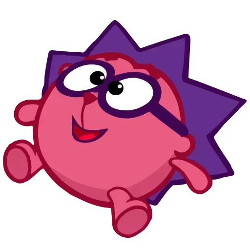
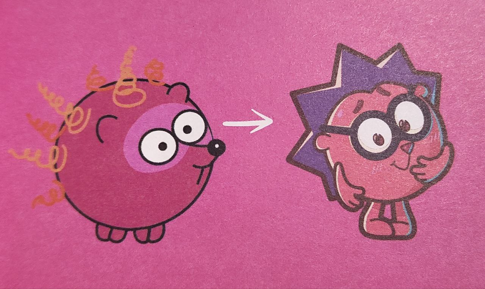
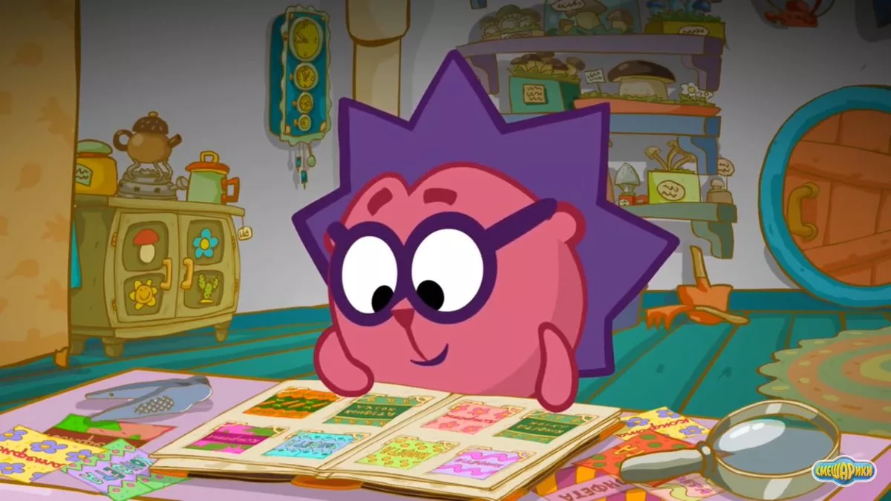
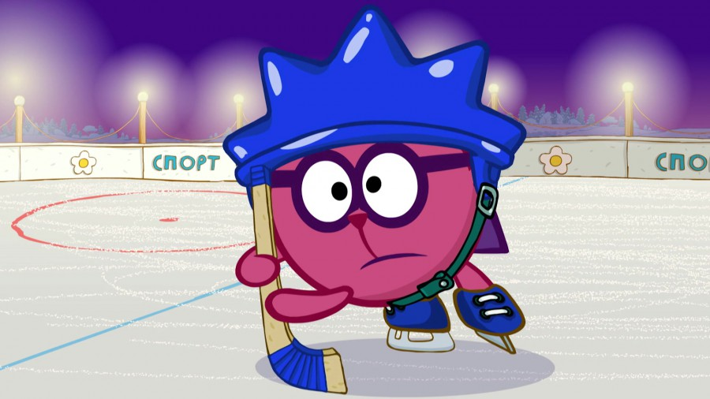
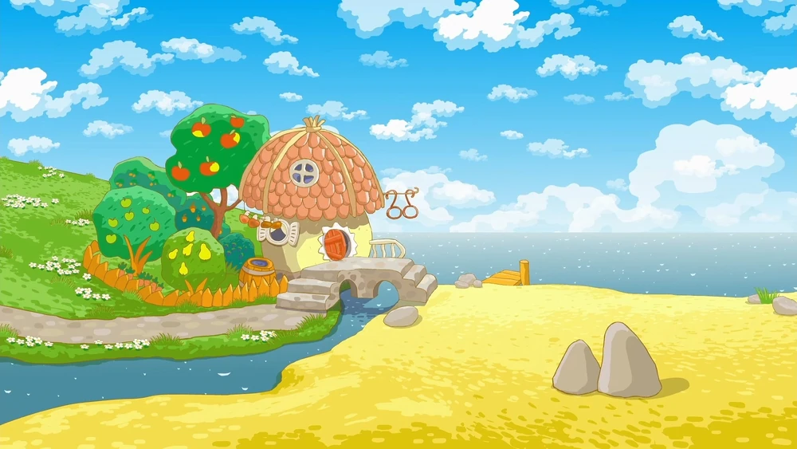

В «Сластёнах» Ёжика звали сперва Колюня (колючий ведь). Ежуня, потом Жожик. Очков он не носил и ходил на четырёх ногах, как и полагается обыкновенным ежам. Жил в домике-дуршлаге под зонтиком. И его колючки вовсе не были таковыми сперва спину украшали жёлтые пружинки. Он походил на шарик, утыканный макаронами. Когда Салават Шайхинуров дорабатывал персонажа, то снабдил его мелкими колючками в количестве «очень много» штук, так как исходные пружинки были неудобны при рисовании.

- Я сел делать раскадровку. вспоминает Денис Чернов, и пришёл в ужас от такого множества колючек. Буду только сидеть и выводить эти треугольники.
И так мне стало лень, что я просто уменьшил их количество до примитивного. Показал Салавату, он одобрил: «А так даже прикольнее!»
Флегматичный Ёжик рад бы сидеть дома, собирать фантики от конфет и любоваться своими неразумными собратьями-кактусами. Он такой тихий и приятный мальчик, что невольно задумаешься: а так ли этот тихоня безобиден? Но всё же в критичных ситуациях он проявляет небывалую смелость, благородство и прыть. Очень совестливый и тяжело переживает конфликты.
- Образ Ёжика собирательный, - говорит озвучивший его Владимир Постников. Где-то это Слоненок из советского мультфильма «38 попугаев». Где-то Пятачок из «Винни-Пуха», а где-то даже Голлум из «Властелина колец». Сложно было обьединить их всех в одного персонажа!

Ёжик очень любит коллекционирование. У Ёжика есть свои коллекции: коллекция фантиков и коллекция кактусов. Ёжику очень дороги эти коллекции, он очень дорожит ими и ухаживает за ними. В частности, Ёжик не мог расстаться ни с одним кактусом, выбирая его в подарок Нюше. Свои коллекции Ёжик держит в строгом порядке.

Ёжик не особо любит активные виды спорта. Несмотря на это, в серии «Хоккей» после слов Пина Ёжик начал всерьёз играть в хоккей и привёл свою команду к победе. Ёжик также любит играть в гольф, что ещё раз подтверждает его склонность к спокойным и размеренным играм. При этом Ёжик стал единственным чемпионом и игроком по гольфу в Долине Смешариков.
Дом Ёжика выглядит как гриб. Крыша дома покрыта красной черепицей, а само здание бежевого цвета. На домике висит вывеска — очки. Крыльцо каменное, похожее на мост, так как рядом с домиком протекает речка, и крыльцо висит над ней аркой. Рядом с домом Ёжика находится небольшой фруктовый сад, где растут яблони и груши, а иногда и морковь. Сад обнесён забором. Так как лучший друг Ёжика — Крош, их дома расположены очень близко друг к другу.

По натуре Ёжик очень тихий и аккуратный, поэтому ни одна вещь в его доме не валяется не на своём месте. Несмотря на это, Крош считает, что Ёжик дома не убирается. Ёжик — коллекционер, и его жилище уставлено горшками с кактусами, грибами и ракушками. Кроме того, он очень любит читать, и поэтому полки в его домике заняты книгами, расставленными по алфавиту или размеру. В жилище имеется специально отведённое место для переодевания, а в углу стоит кровать-качалка, на которой Ёжик спит. Судя по виду домика снаружи, в доме Ёжика также есть чердак, который, однако, не появляется ни в одной из серий.
В англоязычной версии Ёжик именуется Чико и говорит голосом Джейсона Гриффина, который озвучивал ежа Соника.